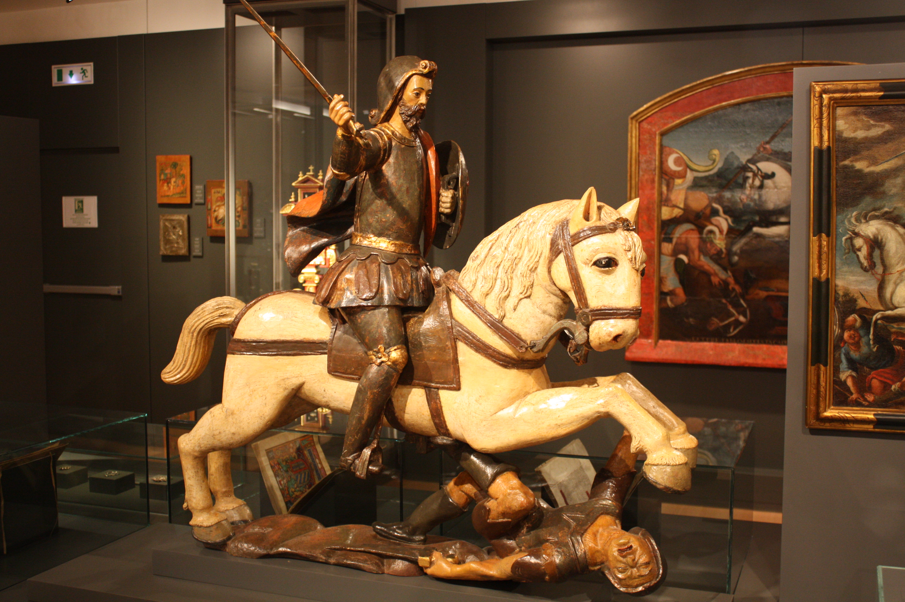
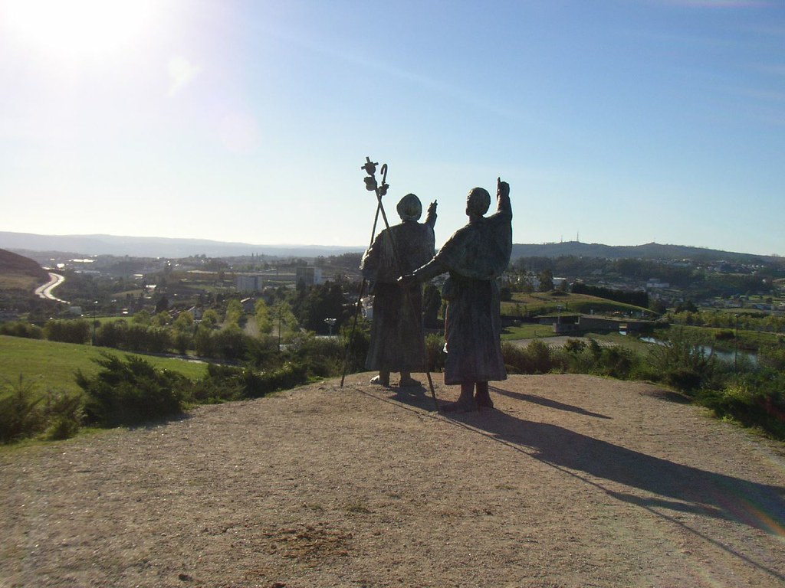
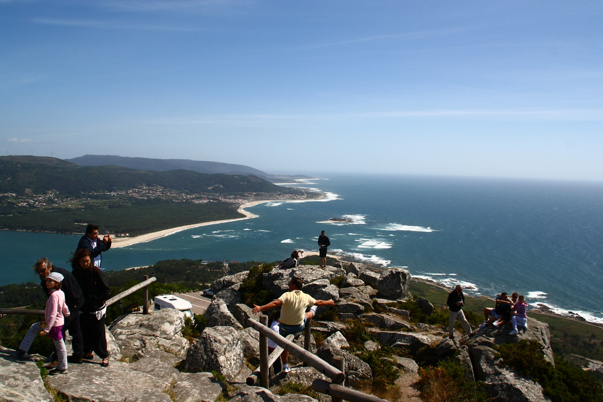

Hotel Costa Vella
Rúa da Porta da Pena, 17
Santiago de Compostela
Fechas disponibles: 13 al 17 de mayo
Alojamientos
Hotel Gelmírez
Rúa do Hórreo, 92Hotel Alda San Bieito
Cantón de San Bieito, 1,Hotel Carrís Casa de la Troya
Rúa da Acibechería, 14Itinerario
Día 1 - 13 de mayo
- Llegada a Santiago de Compostela y check-in en el alojamiento
- Paseo inicial por el casco histórico
- Plaza del Obradoiro y primeras vistas de la Catedral
- Cena de bienvenida con gastronomía gallega
Día 2 - 14 de mayo
- Visita a la Catedral de Santiago de Compostela
- Recorrido por el casco antiguo: Rúa do Franco, Rúa do Vilar
- Museo de las Peregrinaciones
- Tarde libre por el centro
Día 3 - 15 de mayo
- Etapa simbólica del Camino de Santiago: Monte do Gozo
- Ruta de senderismo ligera en grupo
- Comida tipo picnic en ruta
- Regreso y tarde libre
Día 4 - 16 de mayo
- Excursión a las Rías Baixas
- Visita a Combarro y O Grove
- Paseo en barco (opcional)
- Mariscada gallega en grupo
Día 5 - 17 de mayo
- Paseo final por Santiago de Compostela
- Últimas compras de recuerdos
- Tiempo libre antes del regreso
Actividades

Culturales
- Catedral de Santiago de Compostela
- Casco histórico
- Museo das Peregrinacións

Aventuras
- Etapa del Camino de Santiago
- Senderismo en Monte do Gozo

En naturaleza
- Rías Baixas
- Combarro y costa gallega
Precios: Desde 1750 € a 2500 €